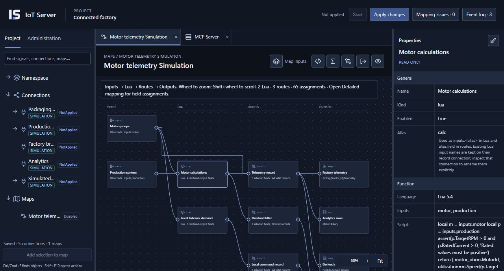
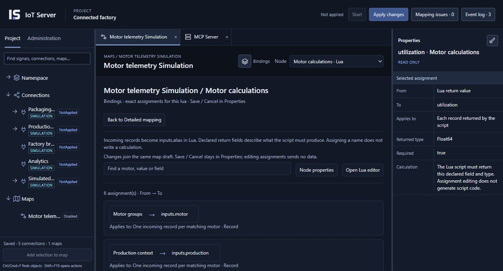
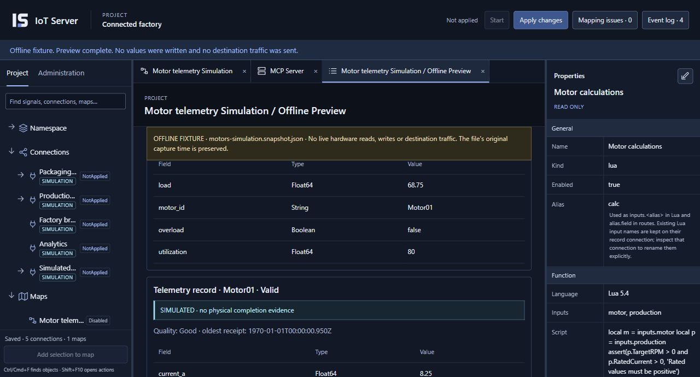
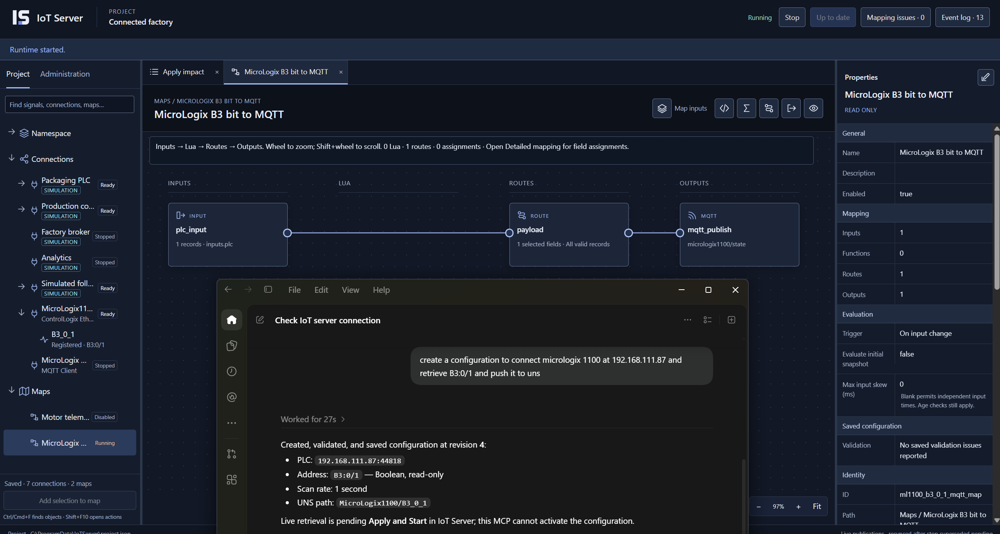

Connect your systems.
Choose drivers, configure connections, and add signals to your namespace.
AGENTIC INDUSTRIAL INFRASTRUCTURE
Connect equipment, organize signals, and build the logic that moves your operation forward. IoT Server brings industrial drivers, a unified namespace, visual mapping, Lua, and simulation into one workspace—with tools for AI agents to help you build.
ONE PLATFORM. FROM CONNECTION TO CONTEXT.
Bring machine data and production context together. Turn them into useful signals, route them to applications, and exchange values with writable equipment. See how it all connects in one visual workspace.
Connect controllers, field devices, brokers, and databases. Organize their signals into a unified namespace that reflects your equipment, production lines, and plant.
Bring signals from multiple connections onto a canvas. Add Lua calculations, rolling statistics, filters, and routes. Follow the path from each input to its destinations.
Simulate connection values and write behavior. Preview calculations and inspect the records your maps produce before connecting real equipment.
Send selected records to MQTT and SQL, expose source and derived signals through OPC UA, and map values to writable controller signals. Define what moves, where it goes, and how it is represented.



AGENTIC ENGINEERING
Connect AI engineering tools through the Model Context Protocol—MCP. Agents can discover supported capabilities, prepare configurations, and preview transformations using sample data.
“Combine signals from my MicroLogix and Modbus devices into a machine-running signal. Publish the result to MQTT and make it available through OPC UA.”
Inspect the connections, signals, and maps in the same workspace you use to build them yourself. Agents can prepare and save supported configurations; you review and apply changes before starting the runtime.
Your engineering tools. Your project. Your control.
THE DRIVER LIBRARY
Explore industrial drivers and data connectors across controllers, process equipment, building systems, CNCs, robotics, and enterprise applications. Find connections by manufacturer, protocol, or equipment category.
Gray entries are planned or not yet implemented.
Try a manufacturer name or choose another category.
FROM FIRST SIGNAL TO LIVE OPERATIONS
Choose drivers, configure connections, and add signals to your namespace.
Combine inputs, add calculations, and choose destinations—visually or with help from an agent.
Use simulated values and previews to inspect results and refine the logic.
Review and apply the configuration, start the runtime, and inspect live values and events.
BUILD WHAT YOUR OPERATION NEEDS
Build the connections and data workflows your operation needs, from the first signal to the applications that depend on it.